01
Fumigación y control de plagas
Servicios orientados al control y erradicación de plagas en diferentes tipos de espacios.
Consultar servicioControl de plagas con insumos biológicos
Fumigación, desratización, desinfección y saneamiento ambiental para espacios residenciales, comerciales e industriales.
FumiGo+ S.A.S.
Brindamos servicios de fumigación, control y erradicación de plagas, desratización, desinfección y saneamiento ambiental. También comercializamos insumos, equipos y productos relacionados con el control de plagas y el aseo.
Explorar solucionesControl de plagas con insumos biológicos.
FG+ / 01Lo que hacemos
Servicios y productos para acompañar el cuidado de espacios residenciales, comerciales, industriales y otros entornos.
Servicios orientados al control y erradicación de plagas en diferentes tipos de espacios.
Consultar servicioAlternativas para atender la presencia de roedores y cuidar las condiciones del lugar.
Consultar servicioApoyo a las necesidades de desinfección y saneamiento ambiental en distintos entornos.
Consultar servicioRevisamos señales de actividad y posibles puntos de ingreso alrededor de lavadoras, neveras y otros equipos. Podemos orientar medidas de prevención y cotizar el control de plagas según el diagnóstico.
También puedes consultar por diagnóstico, mantenimiento, reparación e instalación de lavadoras, neveras y otros equipos. La atención eléctrica la realiza un técnico calificado y se cotiza por separado. Nunca aplicamos productos dentro del equipo.
Consultar evaluaciónCompra, venta, importación, distribución y comercialización de productos relacionados con control de plagas y aseo.
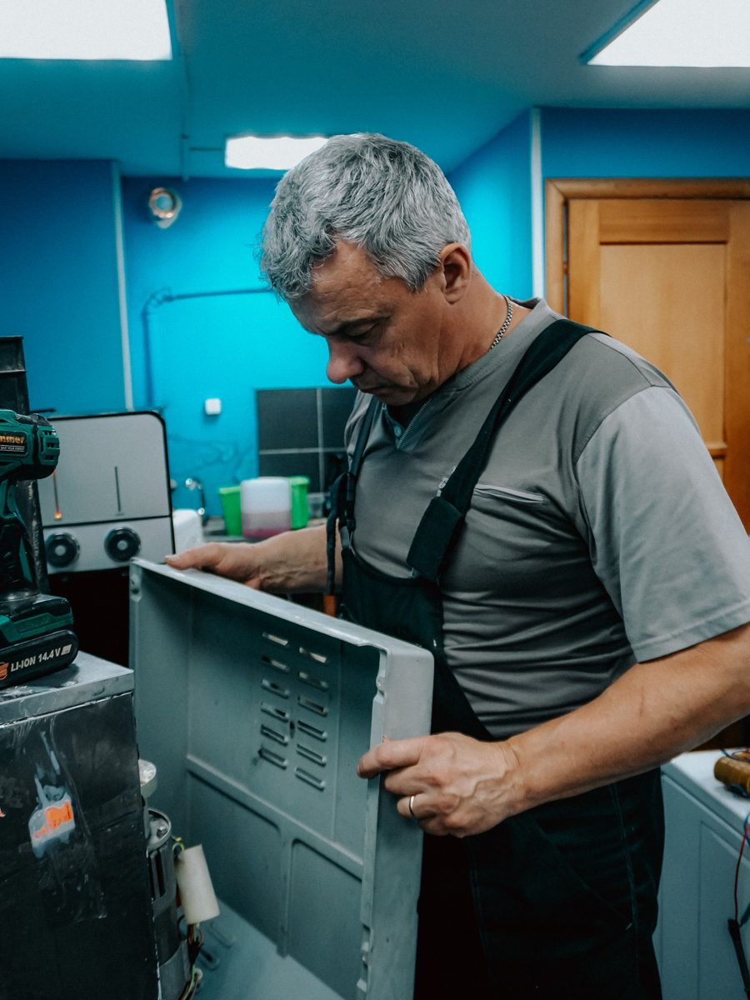
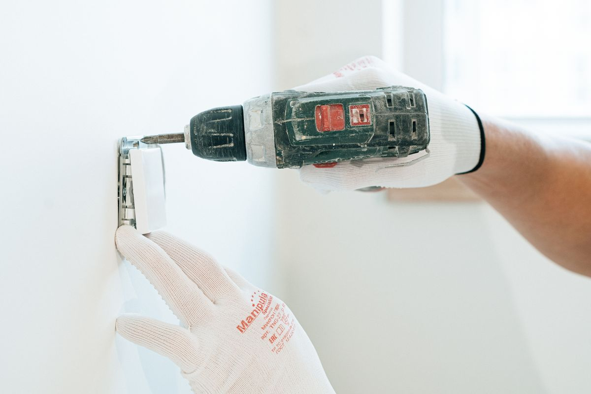
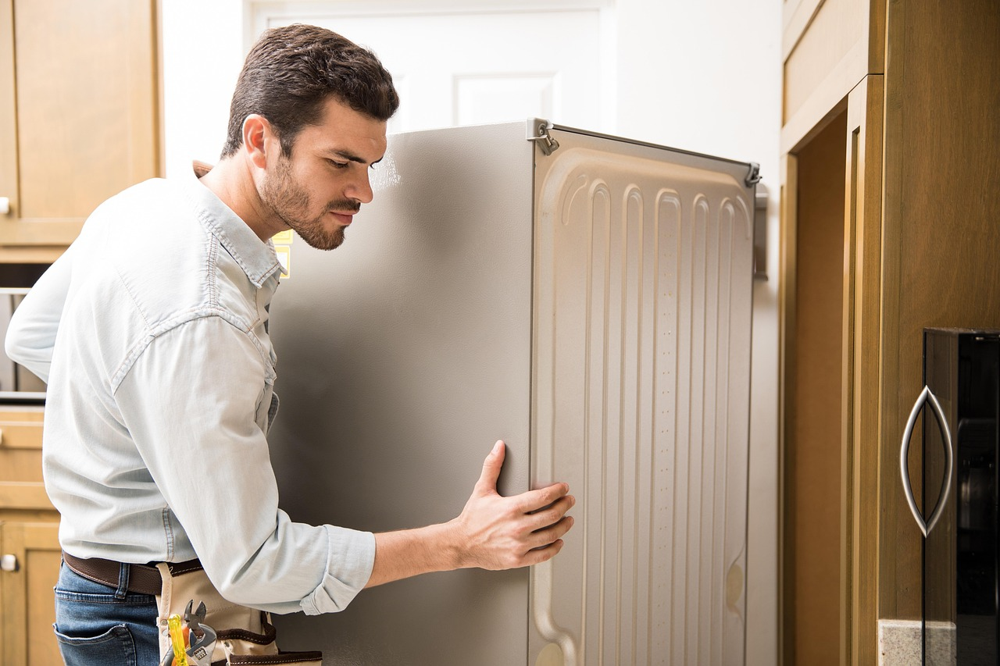
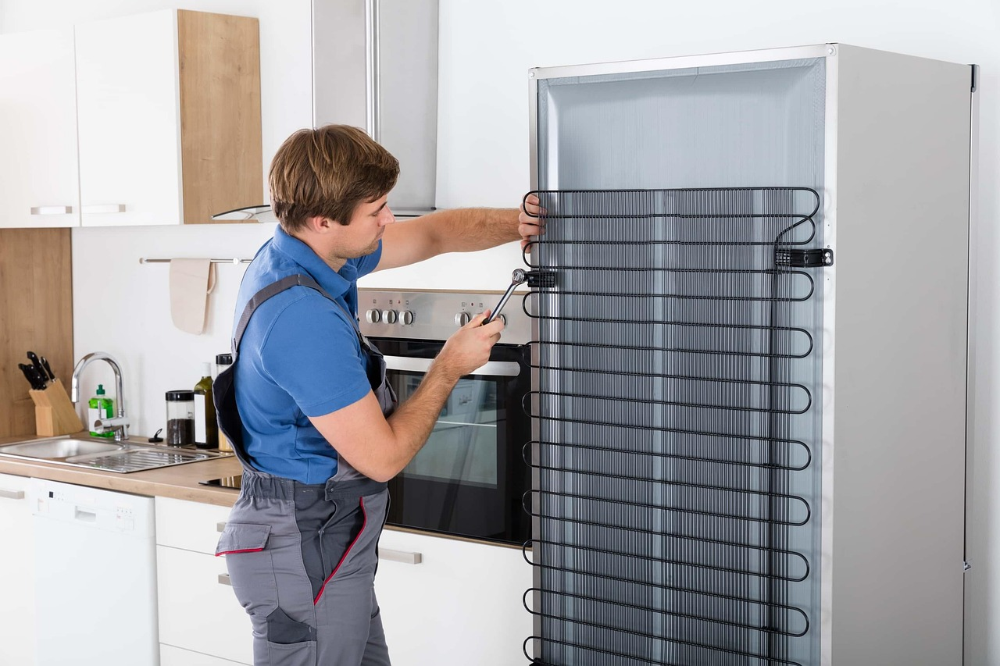
Línea de mantenimiento técnico
Servicios para hogares, comercios e industria, atendidos por personal idóneo o aliados técnicos según el tipo de trabajo.
Mantenimiento preventivo, diagnóstico, instalación y reparación. Revisamos conexiones, funcionamiento y señales de plagas alrededor del equipo.
Instalación, mantenimiento y reparación de estufas a gas o eléctricas, sujeto a evaluación de conexiones y condiciones del sitio.
Diagnóstico y adecuaciones eléctricas. Los trabajos de instalación se ejecutan con personal competente y bajo la reglamentación aplicable.
Instalación y revisión de puntos y gasodomésticos con personal y certificaciones requeridas. No intervenimos redes sin verificar condiciones y requisitos.
Instalación y mantenimiento cotizados tras revisar el equipo, conexiones hidráulicas y eléctricas, ventilación y condiciones del espacio.
Recuperación estética de neveras, lavadoras y estufas: preparación de superficies, latonería menor y pintura compatible con el equipo.
Si hay olor a gas, chispas o cables recalentados, suspende el uso y contacta al operador o a un técnico competente. El control de plagas alrededor de los equipos se realiza sin aplicar productos dentro de ellos.
Tarifas y mantenimiento
Atenciones puntuales y programas de prevención con alcance definido para cada espacio, actividad y nivel de riesgo.
Atenciones puntuales
Cotización por alcance
Valor según área, plaga observada, tratamiento y desplazamiento.
Cotizar visitaCotización por sede
Consideramos áreas críticas, operación, horarios y nivel de actividad.
Cotizar visitaEvaluación del sitio
Definimos alcance, zonas de intervención, frecuencia y soportes requeridos.
Solicitar evaluaciónCotización por hectárea y aplicación
Se calculan cultivo, área, número de aplicaciones, insumos, personal, equipo y movilización.
Cotizar aplicaciónTarifas orientativas · hogares
$110.000–$190.000
Según tipo, capacidad, nivel de desarme y estado.
$150.000–$250.000
Según tamaño, sistema y acceso a componentes.
$140.000–$210.000
Depende de puestos, horno y tipo de conexión.
$100.000–$170.000
Con puntos existentes en buen estado; adecuaciones se cotizan aparte.
$120.000–$180.000
Equipo y punto existente; modificación de red no incluida.
Desde $60.000
Se confirma el valor de visita y mano de obra antes de empezar.
Cotización técnica
Según inspección, materiales, potencia, distancias y requisitos aplicables.
Cotización por fotos
Se define por tamaño, corrosión, golpes, desmontaje y acabado solicitado.
Valores de lanzamiento propuestos para Líbano y zona cercana, no son una tarifa oficial ni una cotización cerrada. Se contrastaron con tarifas públicas de mantenimiento en Colombia; el desplazamiento rural, los materiales y el diagnóstico de cada equipo pueden cambiar el total. Tarifas públicas EPM 2026 ↗ · Mantenimiento de lavadora AYDA ↗
Continuidad y prevención
Prevención programada para casas y apartamentos.
La cuota se calcula con el costo real del ciclo de atención y la frecuencia acordada.
Cotizar programaSeguimiento preventivo para establecimientos comerciales.
La cotización especifica visitas, insumos, áreas cubiertas y costos adicionales.
Cotizar programaPara colegios, clínicas, bodegas y operaciones con varias áreas.
El precio depende de sede, área, actividad y recursos necesarios.
Solicitar evaluaciónPlanes para cuidar tus equipos
El valor mensual se calcula por cantidad y tipo de equipos, frecuencia, desplazamiento y costo de atención. Así cada plan cubre las visitas prometidas y conserva margen para operar.
1 equipo · 1 mantenimiento preventivo anual · agenda prioritaria · informe de revisión.
Hasta 3 equipos · 1 mantenimiento anual por equipo · agenda prioritaria · descuento definido en mano de obra.
Inventario y cronograma por sede · revisiones programadas · bitácora · respuesta según nivel de servicio acordado.
Repuestos, pintura, materiales, nuevas instalaciones y correctivos no están incluidos salvo que la propuesta los detalle. El precio del plan se entrega tras inventariar equipos y zona; no ofrecemos reparaciones ilimitadas. Cotizar mi plan por WhatsApp ↗
Agricultura de precisión
Combinamos imágenes satelitales multiespectrales, ortofotos de alta resolución, límites de lotes y recorridos GNSS. Así visualizamos cómo cambia la cobertura vegetal dentro del predio y priorizamos dónde observar con mayor detalle.
Los índices muestran patrones relativos de la vegetación. No diagnostican por sí solos plagas, enfermedades, deficiencias nutricionales ni una dosis de fertilizante.
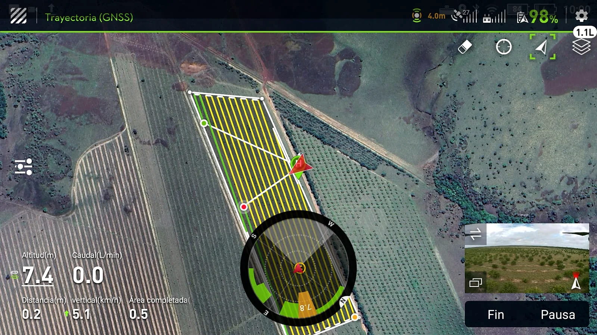
Dos escalas de lectura
La imagen disponible determina qué podemos ver. La escena satelital aporta seguimiento amplio y repetible; una ortofoto de mayor resolución permite reconocer más detalle espacial. Se elige la fuente según cultivo, tamaño del lote, fecha, nubosidad y objetivo.
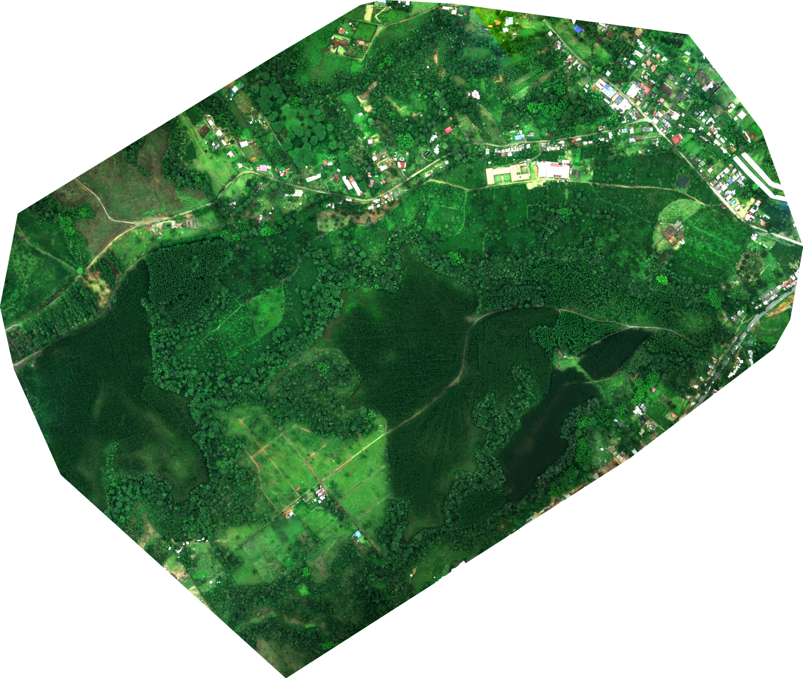
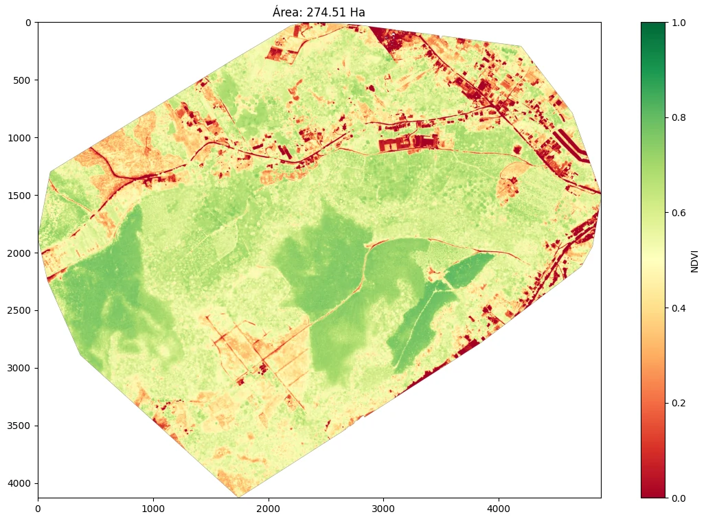
Imágenes de referencia compartidas por FumiGo. La ortofoto muestra información visual del terreno y el mapa de color es un producto NDVI; no se deben leer como si fueran la misma capa o el mismo sensor.
Nuestro proceso
El mapa orienta la inspección y ayuda a organizar decisiones; el diagnóstico agronómico se completa con datos del lote y revisión técnica.
Definimos cultivo y etapa, límites del lote, historial, inquietud del productor y fecha útil para comparar.
Buscamos escenas con fecha, resolución y calidad adecuadas; revisamos nubes, sombras y que el sensor tenga las bandas requeridas.
Calculamos índices disponibles, como NDVI; usamos NDRE u otros únicamente cuando las bandas del sensor lo permiten. Delimitamos zonas para priorizar.
Contrastamos el mapa con recorrido GNSS y observación en campo. Si hace falta, recomendamos muestreo de suelo o tejido antes de definir acciones.
¿Cómo puede ayudar? A priorizar recorridos, ubicar sectores que requieren revisión, comparar cambios entre fechas y orientar el uso más informado de agua e insumos. Cualquier plan de fertilización, aplicación biológica o control debe considerar diagnóstico, recomendación técnica, etiqueta y registro autorizado.
La nubosidad, las sombras, la resolución espacial, la etapa del cultivo y el tipo de sensor pueden afectar la lectura. Un índice de vegetación no mide directamente nutrientes ni confirma la causa de una anomalía. Sobre NDVI · USGS ↗ · Bandas y resolución Sentinel-2 · ESA ↗
Operación con drones agrícolas
Un vuelo útil empieza antes del despegue: se conoce el terreno, el cultivo, los obstáculos y el objetivo; se revisan el equipo, las baterías, el clima y las condiciones de operación. Durante el trabajo se sigue la ruta planeada y, al finalizar, se guardan los registros y se revisa el resultado.
Cada vuelo y aplicación debe realizarse por personal competente, con los procedimientos del fabricante y los requisitos aeronáuticos, ambientales y de etiqueta que correspondan al lugar y al producto.
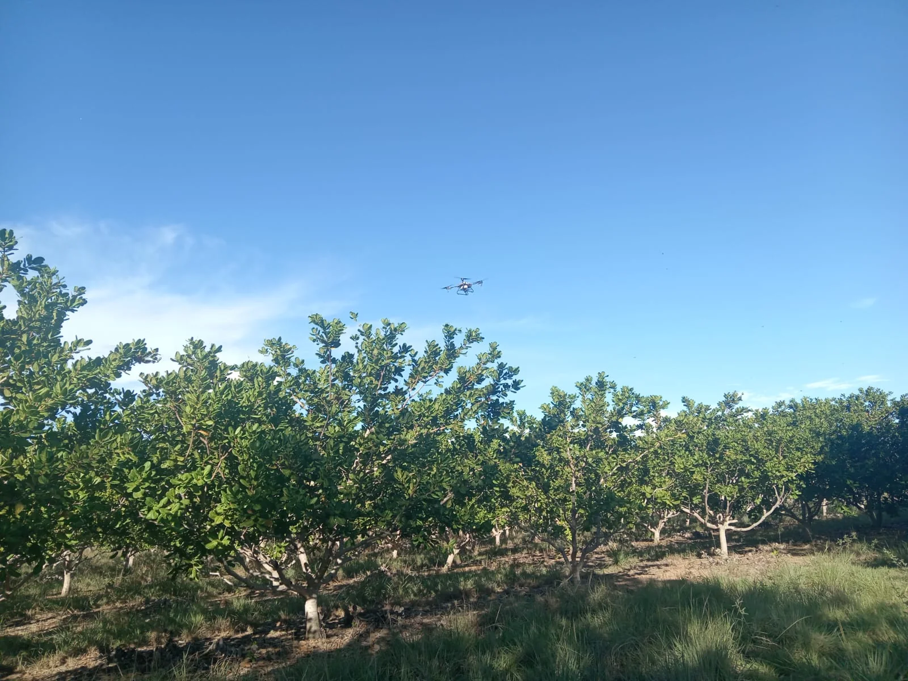
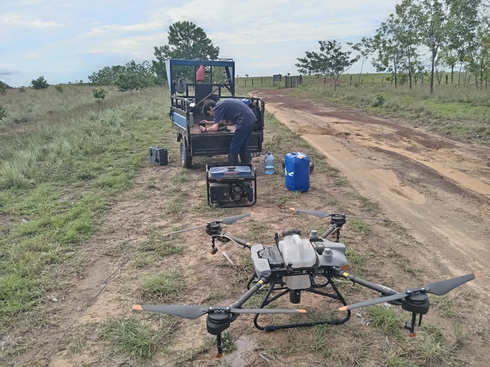
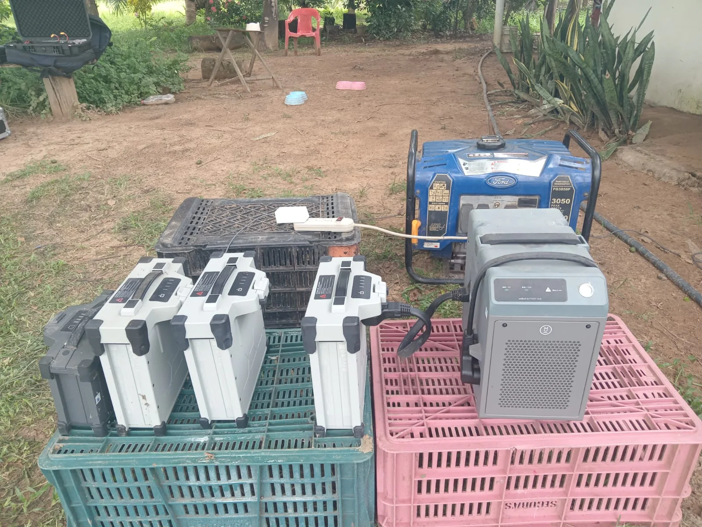
Intermediación y suministro bajo pedido
Gestionamos solicitudes de baterías, cargadores, estaciones de carga, bombas, boquillas, filtros y otros repuestos para drones agrícolas. Primero confirmamos la marca, el modelo exacto, la referencia, el voltaje y el conector para buscar opciones compatibles.
La propuesta y el plazo se confirman antes de comprar. Las baterías de litio pueden tener requisitos especiales de embalaje y transporte; se revisan con el proveedor y el transportador. Guía de transporte de baterías · IATA ↗
Consultar un componente por WhatsApp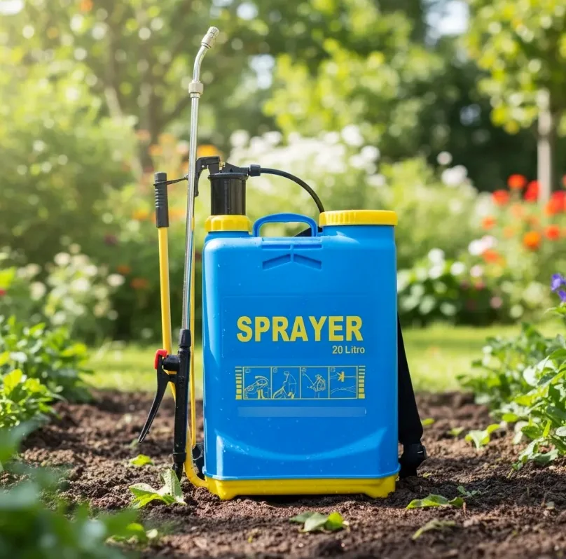
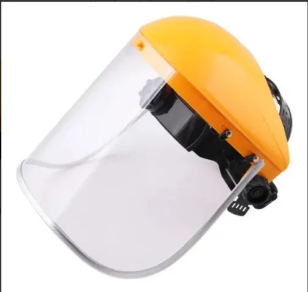
Aplicación responsable
La selección de bomba, boquilla, calibración y elementos de protección personal depende del trabajo y del producto autorizado. Guantes, protección respiratoria, ocular y facial se definen según la etiqueta, la ficha de seguridad y la evaluación de riesgo. Las fotos son ilustrativas, no corresponden a personal de FumiGo.
Foto referencial: Michelangelo Buonarroti · Pexels ↗Insumos agrícolas
Algunos insumos compartidos por FumiGo. La recomendación y el uso dependen del cultivo, la etiqueta y el registro vigente.
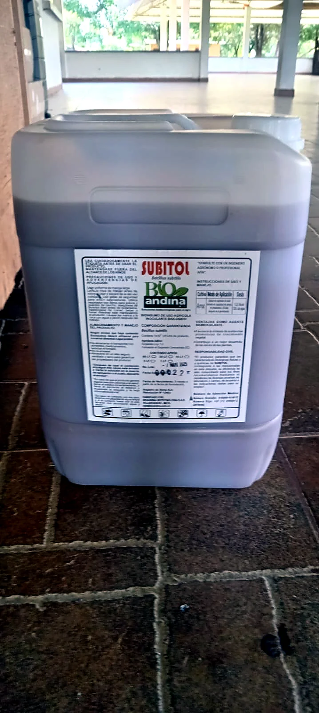
Producto agrícola identificado en su etiqueta con Bacillus subtilis. Su manejo debe seguir las instrucciones y usos autorizados del fabricante.
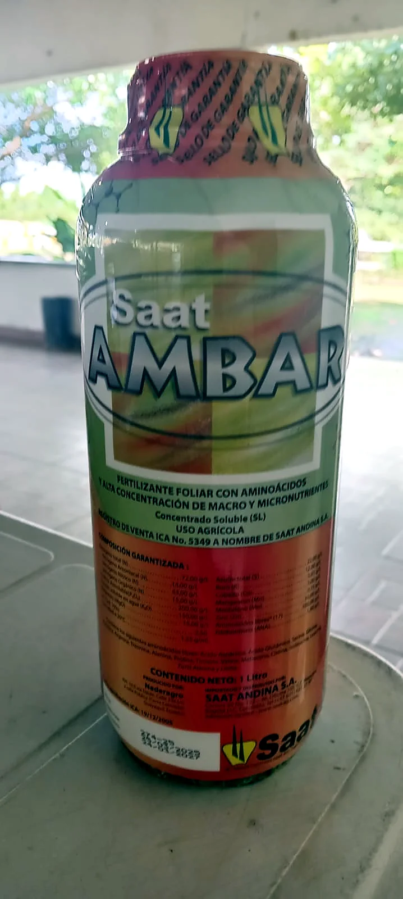
La etiqueta lo describe como fertilizante foliar con aminoácidos y aporte de macro y micronutrientes.
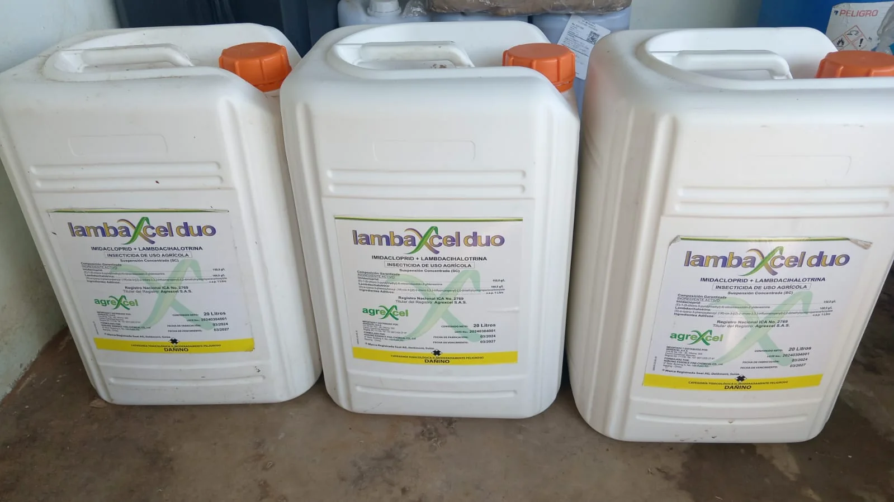
La etiqueta visible reporta imidacloprid y lambdacialotrina. Debe utilizarse únicamente conforme al registro, cultivo y condiciones autorizadas.
La línea agrícola se presenta por separado de los servicios de saneamiento ambiental. Todo producto requiere revisar etiqueta, registro ICA vigente y ficha de seguridad antes de recomendarlo o aplicarlo.
Dónde acompañamos
Atendemos necesidades de control de plagas y saneamiento en diferentes tipos de lugares y actividades.
Líbano, Tolima · Colombia
Cuéntanos qué necesitas. Estamos disponibles por WhatsApp, teléfono y correo.